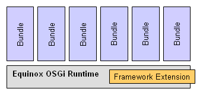
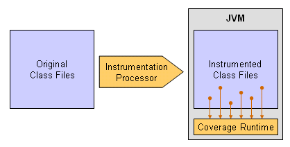

Since Eclipse 3.2 the Equinox OSGi implementation offers so called adaptor hooks. This paper explains how code coverage can easily be added to the Equinox OSGi runtime via on-the-fly code instrumentation employing these hooks. A working example based on EMMA is provided that allows measuring code coverage of any Eclipse application.
Marc R. Hoffmann, Mountainminds GmbH & Co. KG, April 2007
The plug-in based architecture of Eclipse is the foundation of modular design and extensibility. EclEmma for example inserts additional menu items to the workbench or adds the new launch mode Coverage to the existing debug infrastructure. The component model underneath making this possible is based on the OSGi standard which manages the lifecycle and contracts between all the bundles forming an application. OSGi Release 4 introduced so called extension bundles which can be configured to become a part of the OSGi runtime itself and contribute implementation specific functionality.

Eclipse comes with its own OSGi implementation called Equinox, which itself offers several hooks that can be used by extension bundles to modify the behaviour of the OSGi platform. At EclipseCon 2007 in Santa Clara I became aware of so called adaptor hooks offered by Equinox. A impressive demonstration showed how these hooks can be used to dynamically apply aspect-oriented techniques: Little flashing planets for each plug-in graphically visualized the plug-ins currently executing code. So why shouldn't the same mechanism allow imposing code coverage analysis on any Eclipse application?
Framework adaptor hooks are available since Eclipse 3.2 and specified as
call-back interfaces in the org.eclipse.osgi.baseadaptor.hooks
package of the org.eclipse.osgi plug-in. By providing
implementations of these hook interfaces one can inject the OSGi runtime with
new or additional behaviour in respect of framework lifecycle, bundle storage
or class loading. Unfortunately there is no JavaDoc for this package included
with the online help. To explore the interfaces simply import the
org.eclipse.osgi into your Eclipse workspace. Enabling your hooks
requires the following steps:
org.eclipse.osgi.baseadaptor.HookConfigurator
that registers your adaptor hook implementations with the hook registry
in its addHooks() method.hookconfigurators.properties at the root of
your extension bundle containing a property definition
hook.configurators that points to your
HookConfigurator implementation class.osgi.framework.extensions when launching
Eclipse. This can be achieved by specifying a
-D JVM parameter or by adding an
entry to the ./configuration/config.ini file.
Note that Equinox requires extension bundles to be placed in the same
directory as the org.eclipse.osgi plug-in.
There are different possible techniques to determine code coverage during a program run. The one used by several coverage tools like EMMA is byte code instrumentation: In this approach probes are added to the original Java class files. These extra instructions record which parts of the program are executed. While the instrumentation process must be performed before the class files are loaded by the JVM, the instrumented code typically needs a extra runtime library where the coverage information is collected and written e.g. to a local file when the program terminates.

The instrumentation process can either be performed on the class files before the program is launched or during the class loading process. The latter requires hooking into the class loading mechanism of the application – which is easily possible for OSGi applications using Equinox adaptor hooks .
To hide the complexity of the sparely documented EMMA API we abstract a code coverage analyser with a simple interface that may also work for any other code coverage technologies. For implementation details you may study the EMMAAnalyzer implementation.
public interface ICoverageAnalyzer {
/**
* Called when the OSGi framework is started. Can be used for initialization
* tasks.
*/
public void start();
/**
* Called when the OSGi framework shuts down. Here we can e.g. write a
* coverage report.
*/
public void stop();
/**
* For each class definition loaded from a bundle this method is called.
* The method may return a instrumented version of the class or null, if the
* class should not be modified.
*
* @param bundleid symbolic name of the bundle
* @param classname full qualified VM class name
* @param bytes original class file bytes
* @return instrumented class file bytes or null
*/
public byte[] instrument(String bundleid, String classname, byte[] bytes);
}
There are two adapter hook interfaces that we can implement to drive the
coverage analyzer: With the AdaptorHook we get involved with the
framework lifecycle (start/stop), the ClassLoadingHook allows us
to modify raw class files before the classes get defined.
public class InstrumentationHook implements AdaptorHook, ClassLoadingHook {
private final ICoverageAnalyzer analyzer;
public InstrumentationHook(ICoverageAnalyzer analyzer) {
this.analyzer = analyzer;
}
public void frameworkStart(BundleContext context) throws BundleException {
analyzer.start();
}
public void frameworkStop(BundleContext context) throws BundleException {
analyzer.stop();
}
public byte[] processClass(String name, byte[] classbytes,
ClasspathEntry classpathEntry, BundleEntry entry, ClasspathManager manager) {
return analyzer.instrument(manager.getBaseData().getSymbolicName(), name, classbytes);
}
// ... stubs for remaining interface methods
}
When executing EMMA instrumented Java classes additional runtime classes
are required, basically providing functionality for holding and saving
collected coverage data. These few runtime classes are contained within the
emma.jar library itself. Instrumenting loaded Java classes with
EMMA adds a new runtime dependency that is neither explicitly declared in
existing Eclipse bundles nor available within to the bundles during a standard
Eclipse launch.
Therefore we need to find a way to make EMMA runtime classes available to any bundle which classes have been instrumented for code coverage analysis. The OSGi R4 specification provides an interesting example of a bundle manifest header (chapter 3.14):
Fragment-Host: system.bundle; extension:=bootclasspath
I highlighted the part that suggest one can extend not just the OSGi framework
itself (extension:=framework) but also the boot class path, making
additional classes available to all plug-ins. Unfortunately it seems that this
mechanism is not supported by the Equinox OSGi implementation. Please get in
touch if you have any additional information about the current implementation
status in Equinox.
As long we have no better solution a "standard non-standard" Java VM parameter
serves as a stopgap. The -Xbootclasspath/a makes the EMMA
runtime part of the JVM boot class path and therefore available to all OSGi
bundles:
-Xbootclasspath/a:/path/to/your/libs/emma.jar
Note that this mechanism is currently only possible due to the way how Eclipse uses the boot class loader delegation, i.e. any class from the boot class path is automatically available to bundles without declaring that dependency. If future Eclipse versions switch to a more restrictive class loader delegation as proposed by the OSGi specification this will not allow injecting any classes into Eclipse bundles any more.
The Equinox framework extension com.mountainminds.eclemma.osgihook
provided with this paper measures Java code coverage for all bundles of a Equinox based OSGi system, for example a Eclipse
RCP application. If the extension is installed code coverage data is
automatically recorded and written out when the OSGi system terminates. In the
current working directory a folder coverage-nnn will be
created and populated with a HTML report and a *.es file for
further analysis (e.g. import into EclEmma). The framework extension can be
used for standalone OSGi applications or for program launches from the Eclipse
plug-in development environment (PDE).
In case you start your application directly with eclipse.exe
perform these steps to add the code coverage extension:
com.mountainminds.eclemma.osgihook_1.0.0.jar from the
Sourceforge download page.
plugins/ directory. This must be the same
directory where the org.eclipse.osgi bundle is located. Using
e.g. a extension site will not work!./configuration/config.ini
file of your Eclipse installation:
osgi.framework.extensions=com.mountainminds.eclemma.osgihook
exlipse.exe with the following additional parameter
(insert the correct location for emma.jar).
-vmargs -Xbootclasspath/a:/path/to/your/libs/emma.jar
If you want to study or modify the extension bundle you may directly import it to your PDE workspace and launch a Eclipse application in development mode. The extension works for any OSGi based launch type, i.e. Eclipse application OSGi framework and JUnit plug-in test.
https://eclemma.svn.sourceforge.net/svnroot/eclemma/research/com.mountainminds.eclemma.osgihook.org.eclipse.osgi
into your workspace (from the Plug-Ins view).com.mountainminds.eclemma.osgihook and the
org.eclipse.osgi bundle are enabled.-Dosgi.framework.extensions=com.mountainminds.eclemma.osgihook
-Xbootclasspath/a:${workspace_loc}/com.mountainminds.eclemma.osgihook/emma.jar
The obvious advantage of the technique described here is that code coverage can be determined for any OSGi bundle respectively Eclipse plug-in without pre-processing the bundles, i.e. physically modifying them. Using this technique for test runs in automated build environments makes extra build targets for instrumented versions of the bundles superfluous. While the application start-up is slightly delayed due to the required byte code instrumentation, there is no significant slow-down during execution.
Java classes required are instrumented on-the-fly, classes that are not loaded don't need to be processed. While this looks like an advantage at first glance it comes with the drawback that there is also no meta information recorded for these classes. They don't appear on the coverage report; completely untested classes will not be shown. A simple workaround here would be to collect the complete meta data "offline" on all involved plug-ins without actually instrumenting them.
While the provided example is kept as simple as possible just to demonstrate the principles, a more evolved version may add additional functionality like filtering the analyzed bundles. Another interesting topic for investigation would be how the framework extension can be used in automated build environments for coverage reports.
This adaptor bundle technique would be a great benefit for EclEmma. In-place instrumentation is no longer required for Eclipse launches. As a consequence any plug-in (not only the ones in the workspace) could be analyzed. Anyhow there are some issues for investigation:
org.eclipse.osgi to a third place,
which may interfere with other installed extensions.com.mountainminds.eclemma.osgihook
http://sourceforge.net/project/showfiles.php?group_id=177969&package_id=230021